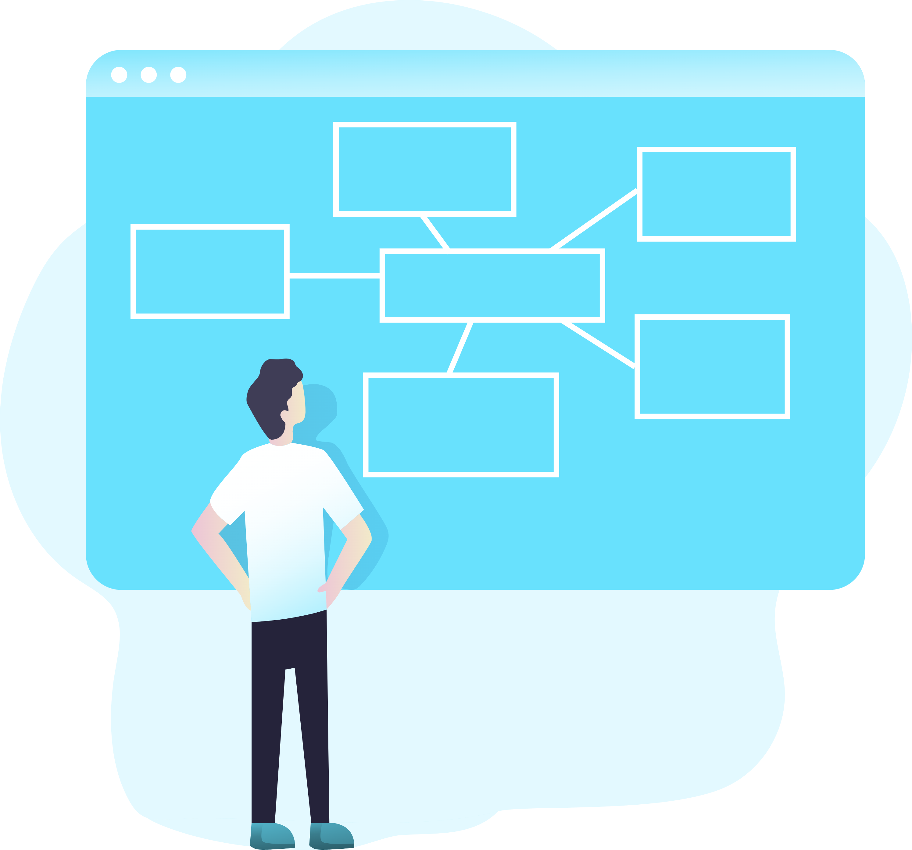

Missão
Na Bridge Assessoria Digital, nossa missão é trazer o mundo digital para empresas que ainda não deram esse passo e proporcionar uma transformação para aquelas cujas informações estão desatualizadas. Acreditamos que a presença online é essencial nos dias de hoje, e estamos comprometidos em ajudar nossos clientes a brilhar no cenário digital.

Visão
Nossa visão é criar uma rede de network que estabeleça pontes entre nossos clientes, fortalecendo e impulsionando todos os empreendimentos envolvidos. Acreditamos que o poder do networking pode levar a oportunidades ilimitadas, e queremos ser o elo que conecta os negócios ao sucesso.

Valores
Na Bridge Assessoria Digital, nossos valores fundamentais são o compromisso com o cliente e a integridade. Colocamos o cliente no centro de tudo o que fazemos e priorizamos a honestidade em nossos relacionamentos, colocando-a acima de qualquer ganho monetário.